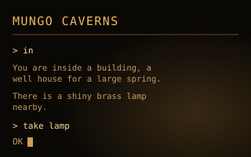
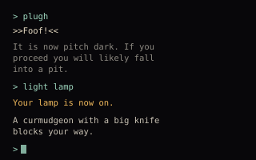
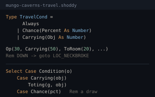
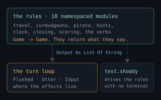

mungo-caverns is the text adventure every other text adventure
came from, rebuilt in a language with no assignment. You stand at the end of a
road before a small brick building; below it is a cave of 185 rooms holding
twenty treasures, a lamp with 330 turns of battery in it, a pirate who steals
what you are carrying, and five curmudgeons who throw axes at you.
Commands are
one or two words, significant to their first five letters — which is why
the game asks for ne rather than northeast — and the
magic words still work. Four hundred and thirty points are on offer; the
game will tell you what rank you earned and how far short of the next one
you fell.

A turn in the darkthe lamp, the pit warning, and one of the five curmudgeons
The travel tablea cave database the compiler checks
What the rules returnoutput is a value until the turn loop utters itThis mill is a Shoddy forward-port of Eric S. Raymond's
Open Adventure, itself a forward-port of Crowther and Woods'
Adventure 2.5 (1995). Because it derives from that work it carries the
BSD 2-Clause License rather than the repository's MIT — see
mills/mungo-caverns/LICENSE and
THIRD-PARTY-NOTICES.md.
Will Crowther wrote the first version in the mid-1970s — a caver and a Fortran programmer, mapping Mammoth Cave for his daughters — and Don Woods added most of what makes it a game in 1977. Everything the genre has done since is downstream of it: the two-word parser, the room description that shortens once you have read it, the light source that runs down, the maze of twisty little passages. It reached this port through Open Adventure, which is maintained as C and, crucially, ships about 107 recorded transcripts of real games. This port was developed against those transcripts and reached byte-for-byte agreement on all 107, which is why the mill is as faithful as it is. They are Open Adventure's and are not redistributed here; what ships and what runs are the five suites below.
Two things were renamed on the way in. The game is Mungo Caverns, after the mungo of the Yorkshire shoddy mills (the heritage of the name), and the knife-throwing folk who prowl the deep passages are curmudgeons. Both renames are total and mechanical, which is what let the grading harness map a recorded 1977 game onto this one and still demand byte-for-byte agreement.
bin/mill run mills/mungo-caverns/mungo-caverns.shoddyor, from mills/mungo-caverns/, use the wrapper —
./build.sh - or ./build.ps1 on Windows,
same subcommands:
./build.sh # play (also: ./build.sh run)
./build.sh test # every headless suite (~20 seconds)It is a plain console program — prompts in, text out, no window — so it
runs anywhere the mill does. Three switches travel with it:
-o plays the 4.30-style interface, in which the one-letter
abbreviations added after 1977 (l, x,
g, z, i) are not words and every token
is upper-cased and cut to ten characters, exactly as packing five sixbit
characters into a 32-bit word once did; -r FILE resumes a saved
game at startup; and -cheat writes save files with a field forced
to an impossible value, which is how the test suite checks what resume does
with a file no honest game could have produced. A fourth, -d,
dumps every draw from the random number generator along with the curmudgeons'
decisions — the only practical way to see what the stream actually did when
two runs diverge.
It also ships on the Shoddy
Reckoner's games shelf (running the -o interface), where
SAVE and LOAD land in the app's own storage —
the same woven program, unmodified.
Twenty-seven source files, about 11,000 lines, 544 Defs and 234
top-level Lets — the cave's tables and constants, built once at
load rather than rebuilt on every read. Rather
more than half of that is the cave itself rather than code: 185 rooms, 70
objects, 878 travel rows, 213 messages, 134 vocabulary entries with their
synonyms, ten hints, eleven rank classes and three obituaries. All of it is
Shoddy source, hand-edited.
That last point is the mill's first design decision and the one everything else follows from. The port started the way the C original works — a YAML database and a generator that emits code from it — and that arrangement was retired: the generated Shoddy is the source now, and both the YAML and the generator are gone. What was bought with that is a database the compiler checks: a room with a missing field or a travel row naming a condition that does not exist is a compile error in the same pass that compiles the rules, rather than something a code generator either notices or does not.
The rules divide into nineteen namespaced modules — travel, curmudgeons, the pirate, the clock, the closing sequence, hints, scoring, fighting, liquids, the verbs, save and resume, and the turn itself — over a core holding the generator, the tokenizer and the word classifier. One file, one idea; the file names say which.
A cave crawl has always been two programs. There is a database — what rooms exist, what is in them, which words go where — and an interpreter that walks it, and the reason the genre survived its own decade is that the second one is small. The interesting question for a language is what the first one is written in. In the C it is YAML compiled to arrays of small integers whose meanings live in comments. Here it is Shoddy, and a handful of ordinary features of the language do all the work.
Record literals make the tables values. A room is a
record; the cave is a List Of Room; the whole database is a
handful of Defs returning literals. Nothing parses at
startup.
Room("LOC_START",
"You are standing at the end of a road before a small brick\n"
& "building. Around you is a forest.",
"You're in front of building.",
{ "FLUID", "ABOVE", "LIT" },
172, False, { }),Note the condition flags: a list of names, not a packed bitmask. The C
packs them because a 1977 machine had reasons to. There is no reason to
here, and the rules read better for it —
Contains(Conds(RoomAt(g)), "LIT") says what it means.
Discriminated unions replace the magic integers. The rule
the port works to is: if a comment has to explain what the number means,
the comment should have been a type. A travel row's condition was a code
plus two arguments; here it is a TravelCond, and where it leads
is a TravelDest.
Type TravelCond = Always | Chance(Percent As Number)
| Carrying(Obj As Number)
| CarriedOrHere(Obj As Number)
| NotInState(Obj As Number, State As Number)
Type TravelDest = ToRoom(Room As Number)
| ToMessage(Msg As Number)
| ToSpecial(Which As Number)And Select Case destructures them, so the interpreter
is a page long and cannot forget a case. This is the entire
condition evaluator:
Def CondHolds(g As Game, o As Op) As Boolean
Select Case Condition(o)
Case Always
True
Case Chance(pct)
RollOf(g, 100) < pct
Case Carrying(obj)
Toting(g, obj)
Case CarriedOrHere(obj)
Toting(g, obj) Or Contains(HereList(g), obj)
Case NotInState(obj, st)
Nth(Props(g), obj + 1) <> stThe type earns its keep immediately next door. Some conditions cost a draw
from the random number generator and some do not, and getting that wrong is
the one way this port can break silently — a rule that draws one extra number
diverges every seeded game from that moment on. With the union in hand
that hazard collapses into one small function, CondSpends, saying
plainly that Chance rolls and nothing else does. A
"no‑curmudgeons" rule is encoded upstream as Chance(100): it
always passes and still spends a number, and naming it apart from
Always is what keeps it from looking like a redundant test
somebody could tidy away.
Sum types are used for the small vocabularies too, not
just the big table. A parsed word is a Kind (motion, object,
action, the magic word, a number, or unknown); what a verb wants done with the
rest of the command is a Phase; how the game ended is a
Fate; whether a line was typed or input ran out is a
Line. Each replaces a convention that was previously a comment
next to an integer.
Select Case True is the guard chain the
rules reach for constantly, and it reads like the prose in the original
source — a list of cases, first match wins:
Select Case True
Case IsHidden(g, rod2) Or Not Closed(g)
Done(VoicedId(g, msgRequiresDynamite), GoClearObj())
Case Here(g, rod2)
Done(With(VoicedId(g, msgSplatterMessage), Bonus = 1, Outcome = Won()), GoClearObj())
Case Location(g) = LocNamed("LOC_NE")
Done(With(VoicedId(g, msgDefeatMessage), Bonus = 2, Outcome = Won()), GoClearObj())
Case Else
Done(With(VoicedId(g, msgVictoryMessage), Bonus = 3, Outcome = Won()), GoClearObj())Named-field construction and With carry the state.
The game is one record of forty-five fields threaded through every rule, and
it is built by name rather than by position — not as a matter of taste.
Given positionally, inserting a field in the middle silently shifts every
argument after it into the wrong field, and nothing fails to compile. Updates
are the same shape: With(g, Turns = Turns(g) + 1) returns a new
game rather than altering one, and the old one is still in hand — which is how
the turn loop tells that the cave slammed shut on this turn rather
than an earlier one, by asking whether the game before the clock ticked was
still open.
Namespaces are put on the code and deliberately kept off the
data. Each rule module is included under a name —
Include "mungo-caverns-verb.shoddy" As Verb — so a bare word
resolves locally first, then in its own module, and a genuine clash across two
modules is a compile error that tells you to write Name In Verb.
The six data tables share one flat namespace on purpose: Tag is
declared by Room, Obj, Vocab and
Hint alike, and one word serving all four is the point — namespace
them and Tag becomes four different words with In at
every call site.
Two more small things are worth stealing. Pipelines let a scoring rule read like its own specification —
Def MaxTreasure() As Number
Range(1, Length(objects) - 1)
Filter(ScoresAsTreasure)
Map(TreasureValue)
Fold(0, +)— and a Let at the left margin runs once at load, which is
where the name-to-index lookups live: the tables are addressed by small
integer, as they have been since 1977, but the rules say
ObjNamed("BOTTLE") and the lamp, the grate and the keys are
resolved to constants at startup because the darkness check consults the lamp
on every single turn.
The mill's largest structural decision is that the rules do not
print. A rule that speaks returns a game that has more to say:
output accumulates as a List Of String on the Game
record, and the turn loop drains it.
Def Voiced(g As Game, msg As String) As Game
With(g, Output = Both(Output(g), Voice(msg)))
Def Flushed(g As Game) As Game
Utter(Output(g))
With(g, Output = Silent())It sounds like bookkeeping and it changes what can be tested. A rule that
emits its own text can only be checked by capturing a console; a rule that
returns it is a function, and test.shoddy can reach in and grade
one rule at a time — that the bear announces himself before the room does,
that an empty message produces no output at all rather than a stray blank
line, that a fresh game has said nothing yet.
The purity is honest about its exceptions. Ten sites ask a question mid-turn — offering a hint, confirming a quit, offering a resurrection — and each is a read between two writes, so each flushes what has been said and then reads. Save and resume touch files. Those aside, everything from the parser down runs headless, and the turn loop that remains is thin enough that there is nowhere in it for a bug to hide.
The purity above is a claim, and a claim about testability is only worth what its tests are. There are 1,270 lines of them and 194 assertions against 11,000 lines of game, in five suites that run in twenty seconds.
They exist because a turn is a function. Command, the whole
dispatch — the parser's five rewrites, the verbs, moving, the curmudgeons'
reply, the pit, dying — lives in mungo-caverns-turn.shoddy and
returns a Game. Only the prompt, the flush and the decision to
go round again are left in the shell. So the entire test harness is this:
Def Step(g As Game, line As String) As Game
Let d = Command(ClockTick(With(g, Turns = Turns(g) + 1)), line)
Let settled = Settled(After(d))
If Redescribes(How(d)) Then
Shown(settled, True)
Else
settledTwelve lines, and the cave can be held still anywhere in it.
tests/test-turn.shoddy stands in the dark with the lamp off,
unlocks the grate with and without the keys, checks that lamp get
and get lamp mean the same thing, and suspends a game and reads
it back. The check that matters most is the one no amount of playing could
perform reliably — whether a rule touched the random number
generator, which is the single way this port can break silently:
Rem The pit roll is guarded by three tests. In the light the roll must
Rem not happen at all -- drawing anyway would cost one number a turn and
Rem put every seeded game out of step within a few moves.
Assert(LcgState(PitCheck(litRoom)) = LcgState(litRoom),
"THE PIT DOES NOT ROLL IN A ROOM YOU CAN SEE")
Assert(LcgState(PitCheck(inDark)) = LcgNext(LcgState(inDark)),
"AND ROLLS EXACTLY ONCE IN THE DARK")Scoring gets the same treatment. A played session can only ever show you the total; held still, each of the seven terms can be isolated by setting one field and asking what changed — thirty for the lives you have not spent, twenty-five for waking the curmudgeons, two for laying eyes on a treasure and its full value for carrying it home.
tests/test-tables.shoddy asserts what has to be true of the
cave itself — every travel row leads to a room that exists, every block of
rules ends in a row with Stop set, every hint costs points and is
offered somewhere, every room flag is one the rules actually test for. These
replaced a guarantee the port gave up when it retired its code generator: a
generator cannot silently drop a field, but a person editing 878 rows by hand
certainly can.
Two of them earned their keep by what they found. Asserting that every room
describes itself failed — on LOC_BUILDING1, which turns out to be
right: it is a forced room, the instant of climbing the beanstalk,
and you are moved on before you can look around. The assertion became the more
interesting one, that every room you can stand in describes itself
and every forced room forwards you somewhere real. And walking the travel
table from the end of the road shows that thirteen of the 185 rooms
are not connected to it at all, which is not a bug either — it is the
exact census of the three places where movement escapes the table:
Rem The bridge's far side is not written in the travel table at all: the
Rem troll stands at both ends of it, and the crossing rule computes where
Rem you come out from his two placements.
Def BridgeEdges() As List
Let ps = Places(ObjAt(ObjNamed("TROLL")))
{ { First(ps), Nth(ps, 2) }, { Nth(ps, 2), First(ps) } }Add the bridge and nine rooms open up; add the magic rug and the ledge does; what remains unreachable is the repository, which you cannot walk into because the closing sequence puts you there. A fourth exception would fail the test, which is the point of counting them.
Where the scenarios each hold one rule still, tests/test-walk.shoddy
does the opposite: it plays. Thirteen commands take it from the road to the
nugget and home again, and the score is checked at every landmark — 32 in the
well house, 57 on reaching the Hall of Mists where the curmudgeons wake, 59
for laying eyes on the gold, 69 with it stowed. One wrong number anywhere on
that route and the walk lands somewhere else.
The route was derived from the travel table rather than remembered, and deriving it turned up the cave's oldest joke. The way down is the pit and the steps; the way back up them is barred while you are carrying the gold, and the bar is not in any code — it is a condition on a travel row, which diverts you to a dome that is unclimbable. So the walk goes home the other way, through Y2 and the second magic word, and asserts both halves:
Assert(Location(tried) = LocNamed("LOC_MISTHALL"), "THE GOLD WILL NOT COME UP THE STEPS")
Assert(Mentions(Spoken(tried), "dome is unclimbable"), "AND THE DOME SAYS WHY")
Assert(Location(empty) = LocNamed("LOC_PITTOP"),
"WITHOUT IT THE SAME STEPS TAKE YOU STRAIGHT OUT")It is deliberately a stage rather than a full win: extending it means adding the next stretch and the score it should reach, where a walkthrough that only asserted 430 at the end would say it broke but not where.
tests/test-fuzz.shoddy draws words at random from the game's
own vocabulary, one or two at a time, and throws them at whatever state the
last one left behind. It asserts nothing about the answers — only that after
every command you are still somewhere, still carrying things that exist, the
tables are still the size they were, and the score is still a score. That
catches the class of bug the other suites cannot see: the index that goes out
of range, which aborts rather than answering wrongly.
It is deterministic — the commands come from the game's own generator run from a separate seed threaded alongside the game, so a failure names a run and a step that replays exactly. Three runs from three starting states; on the run we ship, one of them is killed by a curmudgeon's knife after 43 commands, which the suite reports rather than hides.
One honest limit, stated plainly: all five suites are a baseline, not an oracle. They can tell you the cave is internally coherent and that the port still does what it did yesterday. They cannot tell you it matches Crowther and Woods. What established that is the next section, and it is history rather than something you can re-run.
This is a port, so its specification was never a description of what the
game should do — it was a recording of what the original does. Open Adventure
ships about 107 of those: a .log of commands and the
.chk of the exact output they produce. This mill was developed
against them and finished at byte-for-byte agreement on all 107.
Ninety-two of them open with an in-band seed command that pins
the random number generator, and that is what made them worth more than
golden files snapshotted from the build of the day: a golden file would happily
bless a divergence, while a seeded transcript catches the single extra draw.
The generator is the 1970s linear congruential one,
x' = (1093x + 221587) mod 220, and it reproduces bit
for bit here for a reason worth writing down — the largest value the
recurrence ever forms is about 1.15×109, far below
253, where Shoddy's Numbers are still exact integers. The
arithmetic is not an approximation of the C's; it is the same arithmetic.
Three adjustments made the two comparable, worth recording because they
were made rather than assumed away: the curmudgeons' upstream name was
substituted in both directions, since the recorded commands going in name them
the old way and the output coming back names them the new one; the game's own
name was mapped forward onto the expected text; and both sides were reflowed
paragraph by paragraph, because curmudgeon is a longer word than
the one it replaced and stored message text therefore wraps at different
columns. Where this port and a transcript disagreed, the transcript won —
including where it records a bug. The original's bugs are load-bearing and are
not to be fixed.
The transcripts are Open Adventure's and are not redistributed here, so there is nothing in the tree to replay. Everything they graded was folded into the five suites above, and a change to the random stream or to stored message text is now the kind that has to be reasoned about rather than run.
The C original keeps the whole game in one global
struct game_t; the 1970s Fortran was a single listing. The seam
here is drawn twice over. Across one axis the split is data from
rules: six table files that declare what the cave is, and a core plus
nineteen modules that decide what happens in it. Across the other it is
rules from effects: the rules return values, and the effects
are penned into three small files — say, where output finally
becomes a Print; ask, where a line is read; and
save, which writes the file — with
mungo-caverns.shoddy, the turn loop, deciding when each of them
runs.
The payoff is that test.shoddy includes every rule module and
still needs no terminal, which is the property the port was refactored to
get. The second payoff is that a rule is findable by what it does rather than
by where it sat in the C — the curmudgeons' turn is in
mungo-caverns-curmudgeon.shoddy whatever file it came from
upstream. That is deliberate: the sources once carried the C file and line
each rule was ported from, and those citations were swept out, because keeping
several hundred of them accurate as code moved cost more than it returned.
Lineage and credits live in LICENSE and
THIRD-PARTY-NOTICES.md now, and matching a rule back to the
original means searching the C for what it says.
| Machine | Why | |
|---|---|---|
| str | In the core, for the
tokenizer: Split and Trim cut a command into its one
or two words. StartsWith spots the # comment lines a
scripted session carries, and Join is how a test asks a rule what
it just said. | |
| seq | Throughout:
Contains alone answers most of what the rules ask — is this word
among the synonyms, is this flag on the room, is this object in your hands —
with Append, Any, All,
CountIf, Last and Flatten behind
it. |
That is the whole list, and as with oregon the
short list is the interesting fact: a game of this size needs almost nothing
but the language itself. Even the message renderer —
%d, %s, and the game's own %S, a plural
that looks back at the previous %d so one message can say "1
turn" and "4 turns" — is twenty lines of builtins. The save format likewise
goes through Shoddy's own binary words rather than a machine: a version
number and then every scalar and array in a fixed order, written with
explicit PutNum and PutBool calls rather than by
reflecting over the record, which is exactly why renaming a field is
byte-safe and reordering a call is not.